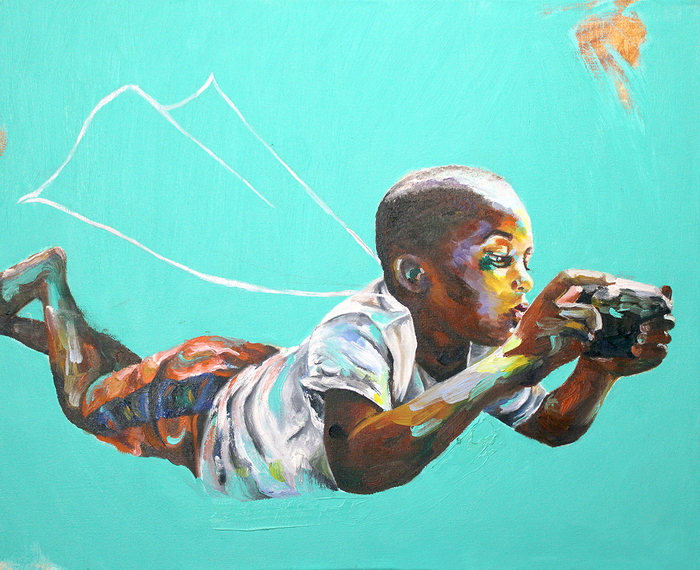

Cornelia Arts Building May Open Studios DAY TWO
Day Two: Cornelia Arts Building May Open Studios, Celebrating 40 Years !
The Cornelia Arts Building art center celebrates their 40 year anniversary as an artist studio building. Originally an Ice-house, the building has fostered Chicago artist creativity continually since its 1986 conversion to all artist studios. Celebrate at the Cornelia Arts Building May Open Studios, on Friday May 15, from 5 – 9 pm, and on Saturday May 16, from 12 to 4 pm. Located at 1800 West Cornelia Avenue, Chicago, Illinois, the building has undergone extensive renovations recently, and has a modernized interior. Visitors can shop two floors of over two dozen artists open that weekend, and purchase unique gifts of art and crafts at one of the largest artist studio buildings on Chicago’s North side. Guests of all ages are welcome.
Over 100 artists and artisans work in the building, including painters, sculptors, photographers, ceramic artists, print-makers, jewelers, designers, and much more. Repeat visitors always find something new, as differing artists are open at each of only four open house events a year. The May front lobby guest artist is Angie Redmond, sharing her new series of joyful oil paintings, capturing moments of human emotional interactions and individual dignity in the Black community.
Located two blocks south of Addison and one block west of Lincoln Avenue, near the border between Chicago’s Roscoe Village, Lakeview and North Center neighborhoods. The “L” Brown Line Addison and Paulina stops are steps away; as are several bus stops along Addison. Parking available in the building lot and on adjacent streets. Entrance is located along Ravenswood on the east side of the building. Events are free and open to the public.
Cornelia Arts Building May Open Studios 2026
Friday, May 15, 5 pm – 9 pm
Saturday, May 16, 12 – 4 pm
The Cornelia Arts Building – Where Art Works